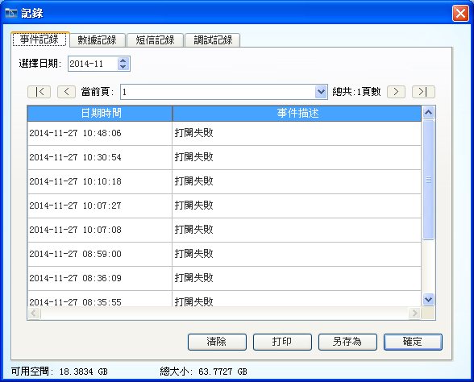
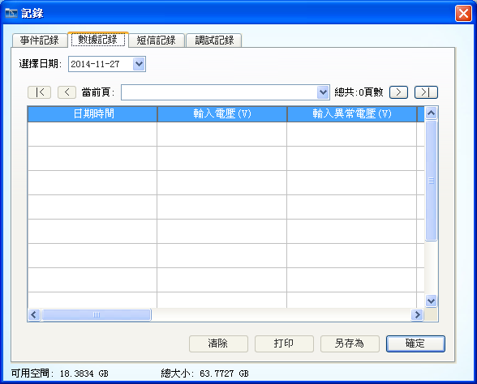
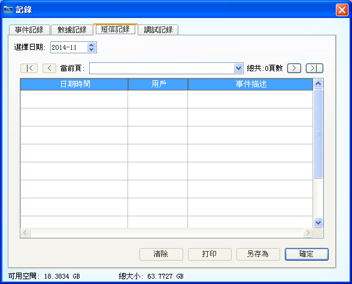
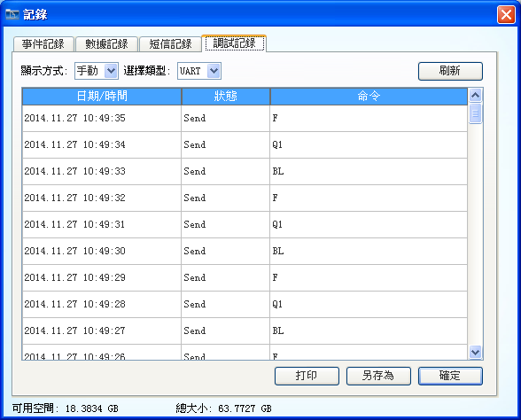

| UPSmart使用手�� |
| ���� |
|
|
|  |
| �D1：事件���� |
|  |
| �D2：�������� |
|  |
| �D3：短信���� |
|  |
| �D4：�{������ |
�]1：如果�]有人工清除����，�榱吮ＷC����的可追溯性，��件不��自行清除����，����件提醒磁�P空�g少於10%�r，��自行清除需要清除的����，�K且做好保存。
�]2：清除日�I����包括清除一��月前、三��月前、六��月前、一年前及全部����。�x�竦��r�g段是���ψ匀��r�g，如清除一��月前����，即清除��前月外的所有����。